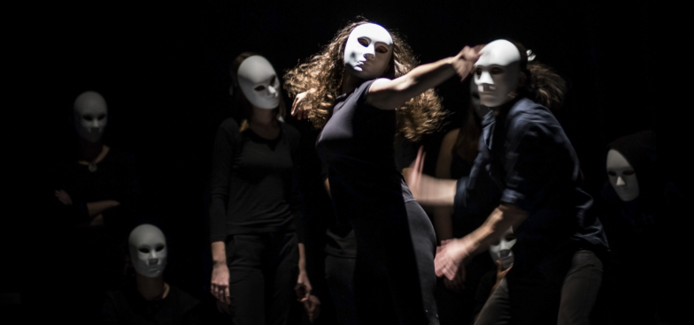

Театр прошёл большой путь от диких шоу с публичными казнями до инструмента терапии и поддержки здоровья. Рассказываем об интересных фактах, которые мало кто знает.
Речь о кегёне — иммерсивных народных представлениях в перерывах пьесы. Классический японский театр — но — подразумевал тяжёлые драматические сюжеты в нескольких актах. Чтобы отвлечь публику от мрачных раздумий о природе добра и зла, между действиями актёры без традиционных костюмов, грима и реквизита развлекали зрителей комическими зарисовками. Сочетание этих двух перформансов называется «нокагу» и входит в список нематериального культурного наследия человечества ЮНЕСКО.
Театр, в отличие от русского бунта, никогда не был бессмысленным, а вот в беспощадности эти действа могут и посоревноваться. В древнем римском театре, например, нередко случались публичные казни. Некоторые исследователи выделяютих в самостоятельный вид представлений. Иногда осуждённых на смерть преступников заставляли разыгрывать известные мифы с неизбежным не‑хеппи‑эндом. В других постановках сценарий прорабатывался меньше и приговорённым к смерти доверяли импровизации в компании голодных диких зверей.
Даже солд‑аут не заставил лондонский театр «Палас» продать зрителям два места на балконе. Это расточительное суеверие объясняется просто — места заняты театральными призраками. Один из них, по легендам, — дух неизвестной балерины, второй — призрак Айвора Новелло, известного валлийского актёра, певца и композитора начала прошлого века.
Copyright © 2022 Бурдин А.С.